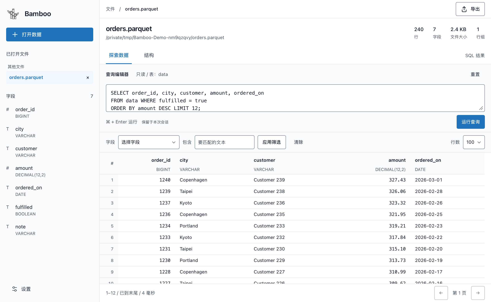
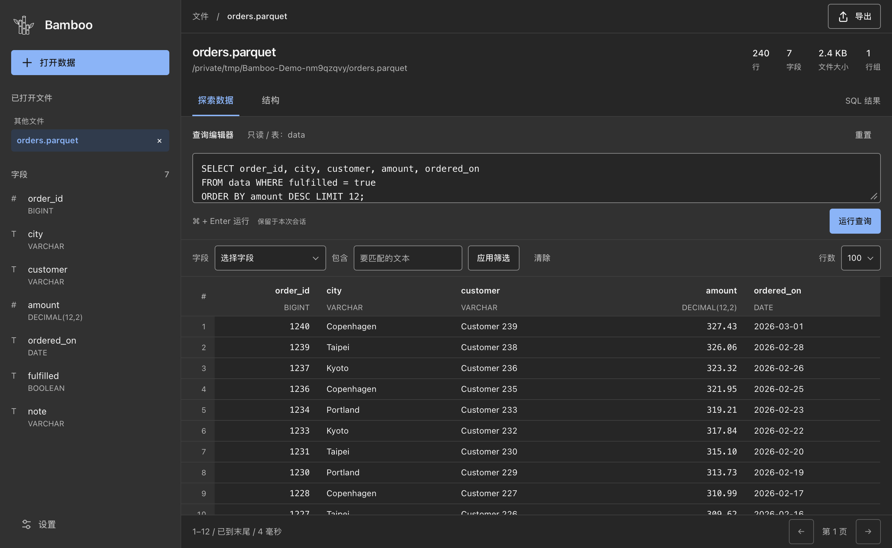

SELECT city, amount
FROM data
WHERE fulfilled = true
ORDER BY amount DESC
LIMIT 12;会写 SQL，就会用。
预览行、查看字段、筛选与排序。用熟悉的 SQL 做关联和聚合，跨文件查询，再把结果导出为 CSV 或 JSON。
A LITTLE BAMBOO. A LOT OF DATA.
打开文件，看见数据，写下你的第一条 SQL。
从本地到云端，把探索数据的时间，还给你。
v0.1.0 · Apple Silicon · macOS 12+ · MIT 协议


文件在哪里，工作台就在哪里。
少一点准备，多一点发现
不必先建库、写脚本。打开 Parquet，就能开始探索。
SELECT city, amount
FROM data
WHERE fulfilled = true
ORDER BY amount DESC
LIMIT 12;预览行、查看字段、筛选与排序。用熟悉的 SQL 做关联和聚合，跨文件查询，再把结果导出为 CSV 或 JSON。
打开电脑上的文件或整个文件夹，也能直接连接 Amazon S3 和 Cloudflare R2。多个工作区，在同一个窗口里切换。
| 文件大小 | 本地耗时 | S3 耗时 | R2 耗时 |
|---|---|---|---|
| 128 MiB | 37.0 ms | 1.50 s | 1.57 s |
| 511 MiB | 36.2 ms | 1.38 s | 1.76 s |
| 1,023 MiB | 38.0 ms | 1.16 s | 1.57 s |
| 2,046 MiB | 39.8 ms | 1.34 s | 1.63 s |
按需读取需要的数据，不用先把整个文件塞进内存。GB 级文件也能快速看见首屏，内存与临时磁盘预算由你掌握。
从下载，到第一条查询
不需要终端，不需要安装开发工具。
点击免费下载 macOS 版，获取 .dmg 安装文件。M1、M2、M3、M4 等 Apple 芯片 Mac 均属于 Apple Silicon；目前不提供 Intel 版。
双击下载的 DMG，把 Bamboo 拖到 Applications（应用程序）。复制完成后，推出安装磁盘，从「应用程序」打开 Bamboo。
将 .parquet 文件拖进欢迎页的大框，或点击 Open data（打开数据）。也可以选择文件夹，或连接 S3 / R2 工作区。
当前版本尚未经过 Apple 公证，首次打开时可能提示“无法验证开发者”或“Apple 无法检查其是否包含恶意软件”。确认你从本页链接的 GitHub Release 下载后，可以按以下步骤允许打开。
如果没有出现“仍要打开”，先确认刚刚尝试过打开 Bamboo；受单位管理的 Mac 可能需要管理员协助。若系统提示“会损坏电脑”或文件已损坏，请停止打开，重新从 Release 下载，仍有问题可到 GitHub Issues 反馈。查看 Apple 官方说明 ↗
你可能还想知道
目前支持搭载 Apple Silicon 的 Mac（macOS 12 及以上），主要用于读取和查询 Parquet 文件。结果可导出为 CSV 或 JSON。可在 → 关于本机查看芯片与系统版本，目前没有 Intel、Windows 或 Linux 安装包。
Bamboo 没有后端服务器，不会接收或存储你的文件、SQL、查询结果或云端凭据。所有查询和数据处理都在你的 Mac 本地完成，应用配置也保存在本机。连接 S3 或 R2 时，由你的 Mac 直接按需读取你自己的云端存储；访问凭据仅保存在本机的 macOS 钥匙串中。
对当前文件，输入
SELECT * FROM data LIMIT 100;，点击 Run
query（运行查询）即可。文件夹工作区支持跨文件查询，例如
SELECT * FROM workspace."orders.parquet" LIMIT 100;。你也可以直接预览、筛选和排序，不必先写 SQL。
不会。Bamboo 以只读方式打开和查询 Parquet 文件，预览、筛选、排序和 SQL 查询都不会修改原文件。导出结果会创建新文件。
Bamboo 可以在后台检查更新，有新版本时会在左下角提示。点击更新提示，按提示确认安装并重新启动即可；你也可以在「设置 → 通用」中手动检查更新。安装和重启都需要你主动确认，不会在使用过程中自动升级。更新从本项目的 GitHub Releases 获取。
Bamboo 免费开源，采用 MIT 许可证。发现 Bug 可以到 GitHub Issues；使用问题、想法和建议欢迎到 GitHub Discussions 讨论。反馈时请注明应用版本、macOS 版本和重现步骤，并隐去密钥、私人路径和业务数据。
一起，让它更好用
到 GitHub 留下你的反馈。
一次讨论，也可能成为 Bamboo 的下一个小进步。
下一份数据，已经准备好了
下载 Bamboo免费开源。为你的 Mac，也为你的好奇心。